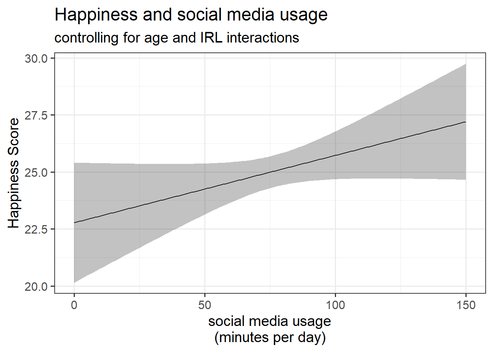
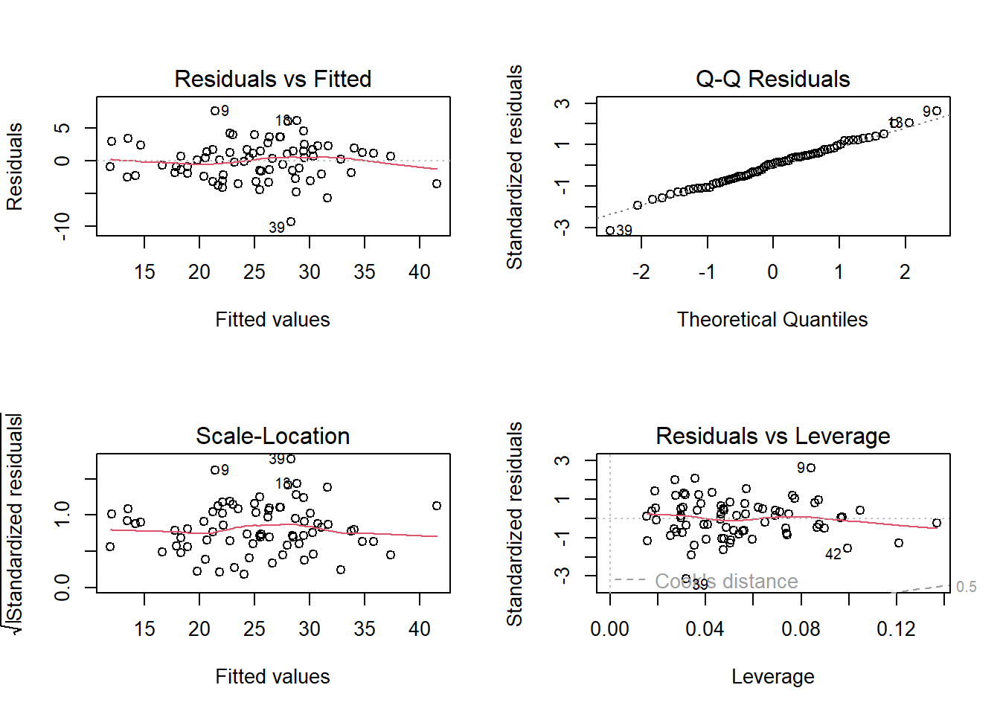
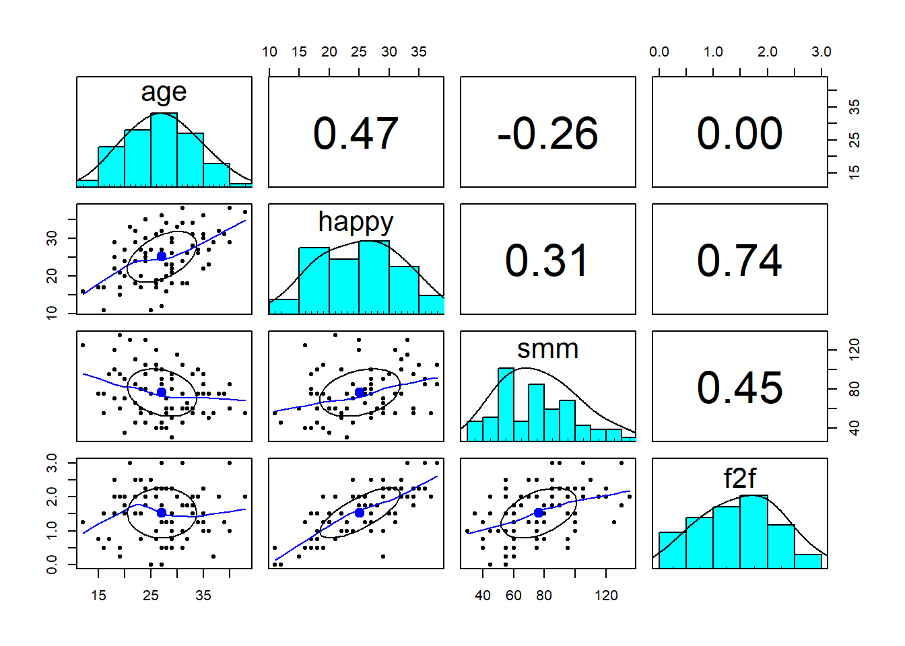
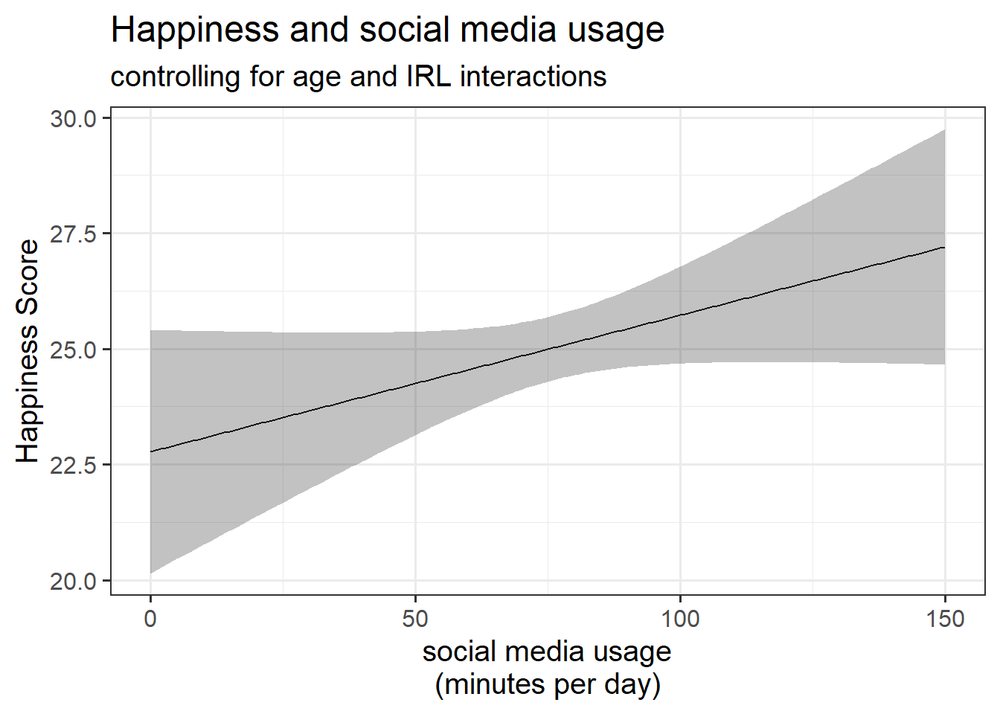
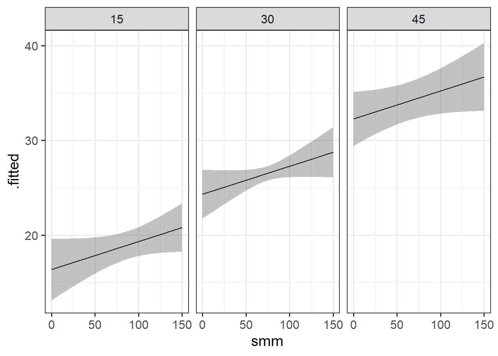
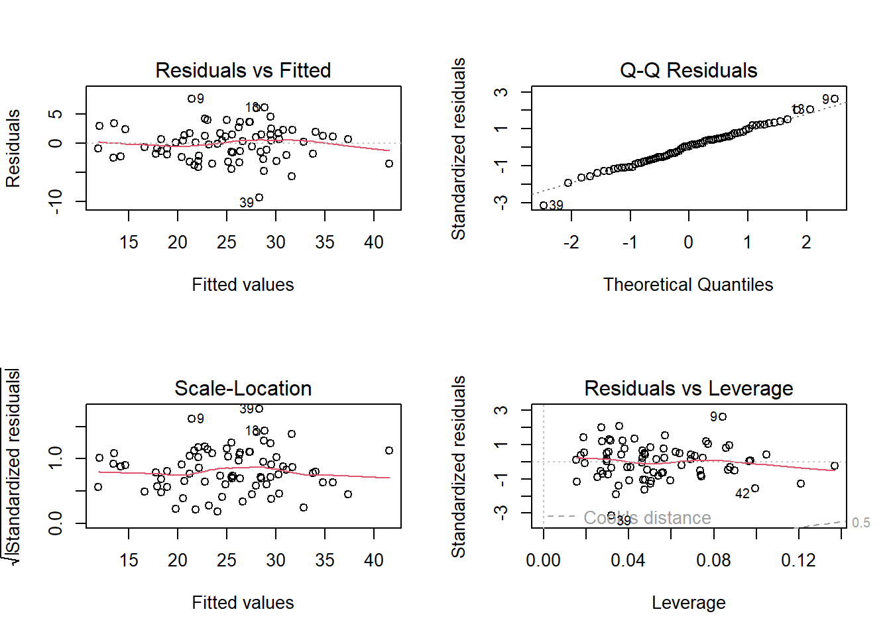

After their recent study investigating how age is associated with inquisitiveness in monkeys (see Week 5 Exercises) our researchers have become interested in whether primates show preferences for certain types of object - are they more interested in toys with moving parts, or with soft plush toys?
A new research team take it upon themselves to look into this. The researchers (Kennis, Lee, Zhou, Smith, Horner & Zhao, 20251) gave 119 monkeys each a different toy, and recorded the amount of time each monkey spent exploring their toy. Toys were categorised as either being ‘mechanical’ or ‘soft’. Mechanical toys had several parts that could be manipulated, while soft toys did not. They also recorded the age of each monkey, and a few further attributes of each toy (its size and colour).
The aim of this study is to investigate the following question:
Do monkeys have a preference between soft toys vs toys with moving parts?
Size of object in cm (length of largest dimension of the object)
exploration_time
Time (in minutes) spent exploring the object
Question 1
Fit a simple linear model examining whether exploration_time depends on the type of object given to monkeys (obj_type).
Make a plot too if you want!
Hints
There’s nothing new here. It’s just lm(outcome ~ predictor).
For the plot, try a boxplot maybe? or even a violin plot if you’re feeling adventurous!
Solution 1.
monkeytoys <-read_csv("https://uoepsy.github.io/data/monkeytoys.csv")model1 <-lm(exploration_time ~ obj_type, data = monkeytoys)summary(model1)
Call:
lm(formula = exploration_time ~ obj_type, data = monkeytoys)
Residuals:
Min 1Q Median 3Q Max
-8.5361 -2.8155 0.2639 2.7492 11.2639
Coefficients:
Estimate Std. Error t value Pr(>|t|)
(Intercept) 9.2361 0.5470 16.884 <2e-16 ***
obj_typesoft -1.2705 0.7835 -1.622 0.108
---
Signif. codes: 0 '***' 0.001 '**' 0.01 '*' 0.05 '.' 0.1 ' ' 1
Residual standard error: 4.272 on 117 degrees of freedom
Multiple R-squared: 0.02198, Adjusted R-squared: 0.01362
F-statistic: 2.629 on 1 and 117 DF, p-value: 0.1076
From this, we would conclude that monkeys do not significantly differ in how much time they spend exploring one type of toy over another (mechanical or soft).
Let’s go wild and put a boxplot on top of a violin plot!
Is the distribution of ages of the monkeys with soft toys similar to those with mechanical toys?
Is there a way you could test this?
Hints
We’re wanting to know if age (continuous) is different between two groups (monkeys seeing soft toys and monkeys seeing moving toys). Anyone for \(t\)?
Solution 2.
t.test(age ~ obj_type, data = monkeytoys)
Welch Two Sample t-test
data: age by obj_type
t = 4.2966, df = 116.97, p-value = 3.605e-05
alternative hypothesis: true difference in means between group mechanical and group soft is not equal to 0
95 percent confidence interval:
2.604953 7.059829
sample estimates:
mean in group mechanical mean in group soft
15.57377 10.74138
The average age of monkeys with the soft toys is 10.7 years (SD = 6), and the average of those with the mechanical toys is 15.6 (SD = 6.2). This difference is significant as indicated by a Welch two-sample \(t\)-test (\(t(117)=4.3, \, p<0.001\)).
Question 3
Discuss: What does this mean for our model of exploration_time? Remember - the researchers already discovered last week that younger monkeys tend to be more inquisitive about new objects than older monkeys are.
Hints
If older monkeys spend less time exploring novel objects
And our group of monkeys with mechanical toys are older than the group with soft toys.
Then…
Solution 3. We have reason to believe that older monkeys spend less time exploring novel objects. We discovered this last week.
Because our group of monkeys with mechanical toys are of a different age than the group with soft toys, surely we can’t discern whether any difference in exploration_time between the two types of toy is because of these age differences or because of the type of toy?
Fit a model the association between exploration time and type of object while controlling for age.
Hints
When we add multiple predictors in to lm(), it can sometimes matter what order we put them in (e.g. if we want to use anova(model) to do a quick series of incremental model comparisons as in Chapter 11 #shortcuts-for-model-comparisons). Good practice is to put the thing you’re interested in (the ‘focal predictor’) at the end, e.g.: lm(outcome ~ covariates + predictor-of-interest)
Solution 4.
model2 <-lm(exploration_time ~ age + obj_type, data = monkeytoys)summary(model2)
Call:
lm(formula = exploration_time ~ age + obj_type, data = monkeytoys)
Residuals:
Min 1Q Median 3Q Max
-9.3277 -2.2886 0.3889 2.3417 8.4889
Coefficients:
Estimate Std. Error t value Pr(>|t|)
(Intercept) 13.98828 1.03058 13.573 < 2e-16 ***
age -0.30514 0.05808 -5.253 6.86e-07 ***
obj_typesoft -2.74512 0.76092 -3.608 0.000457 ***
---
Signif. codes: 0 '***' 0.001 '**' 0.01 '*' 0.05 '.' 0.1 ' ' 1
Residual standard error: 3.856 on 116 degrees of freedom
Multiple R-squared: 0.2099, Adjusted R-squared: 0.1963
F-statistic: 15.41 on 2 and 116 DF, p-value: 1.159e-06
Question 5
The thing we’re interested in here is association between exploration_time and obj_type.
How does it differ between the models we’ve created so far, and why?
Hints
To quickly compare several models side by side, the tab_model() function from the sjPlot package can be quite useful, e.g. tab_model(model1, model2, ...).
alternatively, just use summary() on each model.
Solution 5.
library(sjPlot)tab_model(model1, model2)
exploration time
exploration time
Predictors
Estimates
CI
p
Estimates
CI
p
(Intercept)
9.24
8.15 – 10.32
<0.001
13.99
11.95 – 16.03
<0.001
obj type [soft]
-1.27
-2.82 – 0.28
0.108
-2.75
-4.25 – -1.24
<0.001
age
-0.31
-0.42 – -0.19
<0.001
Observations
119
119
R2 / R2 adjusted
0.022 / 0.014
0.210 / 0.196
The coefficient for obj_type is much bigger when we include age in the model, and it is significant!
In the model without age, we’re just comparing the two groups. We can see this in the left hand panel of the plot below - it’s the difference between the two group means.
When we include age in the model, the coefficient for obj_type represents the difference in the heights of the two lines in the right hand panel below.
Plot the model estimated difference in exploration time for each object type.
To do this, you’ll need to create a little data frame for plotting, then give that to the augment() function from the broom package. This will then give us the model fitted value and the confidence interval, which we can plot!
Are other aspects of the toys (their size and colour) also associated with more/less exploration time?
We can phrase this as “do size and colour explain additional variance in exploration time?”. How might we test such a question?
Hints
We basically just want to add these new predictors into our model.
Don’t worry about interpreting the coefficients right now (we’ll talk more about categorical predictors next week), but we can still test whether the inclusion of size and colour improve our model! (see Chapter 11 #model-comparisons).
Solution 9. This is our current model:
model2 <-lm(exploration_time ~ age + obj_type, data = monkeytoys)
And we can add the two colour and size variables:
model3 <-lm(exploration_time ~ age + obj_type + obj_colour + obj_size, data = monkeytoys)
Let’s compare them:
anova(model2, model3)
Analysis of Variance Table
Model 1: exploration_time ~ age + obj_type
Model 2: exploration_time ~ age + obj_type + obj_colour + obj_size
Res.Df RSS Df Sum of Sq F Pr(>F)
1 116 1725.2
2 113 1546.7 3 178.47 4.3464 0.006148 **
---
Signif. codes: 0 '***' 0.001 '**' 0.01 '*' 0.05 '.' 0.1 ' ' 1
After accounting for differences due to age and type of object (mechanical vs soft), other features of objects - size (cm) and colour (red/green/blue) - were found to significantly explain variation in the time monkeys spent exploring those objects (\(F(3,113)=4.35, \, p=0.0061\)).
Social Media Use
Data: socmedmin.csv
Is more social media use associated with more happiness?
77 participants completed a short online form that included a questionnaire (9 questions) to get a measure of their happiness. Information was also recorded on their age, the number of minutes per day spent using social media, and the number of hours per day spent having face-to-face interactions.
Note that this has introduced some NA values though! We’ve lost some data:
sum(is.na(smmdat$smm)) # NAs in original data
[1] 0
sum(is.na(as.numeric(smmdat$smm))) # NAs in numeric-converted data
[1] 4
If we look carefully, these entries that we are losing are all slightly different from the rest. They all have ” minutes” in them, rather than just the minutes..
And when we ask R to make “20 minutes” into a number, it isn’t clever enough to recognise that it is a number, so it just turns it into NA:
as.numeric("20 minutes")
[1] NA
Solution 11. So we need to first remove the ” minutes” bit, and then change to numeric.
We can use gsub() to substitute ” minutes” with “” (i.e. nothingness):
gsub(" minutes", "", "20 minutes")
[1] "20"
And we can then turn that into numbers..
as.numeric(gsub(" minutes", "", "20 minutes"))
[1] 20
Solution 12. Now that we’ve figured out how to convert it, I’m just going to overwrite the smm variable, rather than creating a new one.
Okay, now the smm variable is numeric, and we haven’t lost any datapoints!
summary(smmdat)
name age happy smm
Length:77 Min. :12.00 Min. : 6.00 Min. : 30.00
Class :character 1st Qu.:22.00 1st Qu.:19.00 1st Qu.: 60.00
Mode :character Median :27.00 Median :26.00 Median : 75.00
Mean :27.09 Mean :25.16 Mean : 76.36
3rd Qu.:31.00 3rd Qu.:30.00 3rd Qu.: 95.00
Max. :43.00 Max. :47.00 Max. :135.00
f2f
Min. :0.000
1st Qu.:1.000
Median :1.500
Mean :1.529
3rd Qu.:2.000
Max. :3.000
Question 9
Something we haven’t really come across until now is the importance of checking the range (i.e. min and max) of our variables. This is a good way to check for errors in the data (i.e. values that we shouldn’t be able to obtain using our measurement tool).
Check the range of the happy variable - does it look okay, based on the description of how it is recorded?
But our scores are based on the sum of 9 questions that can each score from 1 to 5. So surely that means the minimum someone could score would be 9, and the maximum they could score would be 45?
Finally, we’ve got to a point where we can look at some descriptive statistics - e.g. mean and standard deviations for continuous variables, frequencies (counts) if there are any categorical variables.
Hints
You can do this the manual way, calculating it for each variable, but there are also lots of handy functions to make use of.
We can use the describe function from the psych package:
library(psych)describe(smmdat)
vars n mean sd median trimmed mad min max range skew kurtosis
name* 1 77 37.90 21.81 38.0 37.87 28.17 1 75 74 0.00 -1.27
age 2 77 27.09 6.62 27.0 27.00 7.41 12 43 31 0.11 -0.54
happy 3 75 25.12 6.71 26.0 25.11 7.41 11 38 27 -0.05 -0.83
smm 4 77 76.36 24.50 75.0 75.08 29.65 30 135 105 0.41 -0.52
f2f 5 77 1.53 0.73 1.5 1.53 0.74 0 3 3 -0.03 -0.68
se
name* 2.49
age 0.75
happy 0.77
smm 2.79
f2f 0.08
tableone
The tableone package will also be clever and give counts and percentages for categorical data like the name variable. However, names aren’t something we really want to summarise, so it’s easier just to give the function everything except the name variable.
For our research question (“Is more social media use associated with more happiness?”), we could consider fitting the following model:
lm(happy ~ smm, data = smmdat)
But is it not a bit more complicated than that? Surely there are lots of other things that are relevant? For instance, it’s quite reasonable to assume that social media use is related to someone’s age? It’s also quite likely that happiness changes with age too. But that means that our coefficient of happy ~ smm could actually just be changes in happiness due to something else (like age)? Similarly, people who use social media might just be more sociable people (i.e. they might see more people in real life, and that might be what makes them happy).
Especially in observational research (i.e. we aren’t intervening and asking some people to use social media and others to not use it), figuring out the relevant association that we want can be incredibly tricky.
As it happens, we do have data on these participants’ ages, and on the amount of time they spend having face-to-face interactions with people!
Look at how all these variables correlate with one another, and make some quick plots.
Hints
You can give a data frame of numeric variables to cor() and it gives you all the correlations between pairs of variables in a “correlation matrix”
if you want some quick pair-wise plots (not pretty, but useful!), try the pairs.panels() function from the psych package.
Solution 15. Here is a correlation matrix. It shows the correlations between each pair of variables.
Note that the bit below the diagonal is the same as the bit above. The diagonal is always going to be all 1’s, because a variable is always perfectly correlated with itself.
Is social media usage associated with happiness, after accounting for age and the number of face-to-face interactions?
Hints
This question can be answered in a couple of ways. You might be able to do some sort of model comparison, or you could look at the test of a coefficient.
Solution 16. We could do this by fitting the model with age and f2f predicting happy, and then compare that to the model also with smm:
mod1 <-lm(happy ~ age + f2f, smmdat)mod2 <-lm(happy ~ age + f2f + smm, smmdat)anova(mod1, mod2)
Analysis of Variance Table
Model 1: happy ~ age + f2f
Model 2: happy ~ age + f2f + smm
Res.Df RSS Df Sum of Sq F Pr(>F)
1 72 674.67
2 71 646.12 1 28.546 3.1368 0.08084 .
---
Signif. codes: 0 '***' 0.001 '**' 0.01 '*' 0.05 '.' 0.1 ' ' 1
This is testing the addition of one parameter (thing being estimated) to our model - the coefficient for smm.
We can see that it is just one more parameter because the table abovw shows that the additional degrees of freedom taken up by mod2 is 1 (the “Df” column, and the change in the “Res.Df” column).
So we could actually just look at the test of that individual parameter, and whether it is different from zero. It’s the same:
summary(mod2)
Call:
lm(formula = happy ~ age + f2f + smm, data = smmdat)
Residuals:
Min 1Q Median 3Q Max
-9.3208 -1.9972 0.1685 1.7089 7.5643
Coefficients:
Estimate Std. Error t value Pr(>|t|)
(Intercept) -1.41597 2.10045 -0.674 0.5024
age 0.53031 0.05516 9.614 1.74e-14 ***
f2f 6.42390 0.54145 11.864 < 2e-16 ***
smm 0.02953 0.01667 1.771 0.0808 .
---
Signif. codes: 0 '***' 0.001 '**' 0.01 '*' 0.05 '.' 0.1 ' ' 1
Residual standard error: 3.017 on 71 degrees of freedom
(2 observations deleted due to missingness)
Multiple R-squared: 0.8058, Adjusted R-squared: 0.7976
F-statistic: 98.23 on 3 and 71 DF, p-value: < 2.2e-16
Question 14
Plot the model estimated association between social media usage and happiness.
Hints
This follows just the same logic as we did for the monkeys!
Solution 17.
plotdat <-data.frame(age =mean(smmdat$age), # mean agef2f =mean(smmdat$f2f), # mean f2f interactionssmm =0:150# social media use from 0 to 150 mins)augment(mod2, newdata = plotdat, interval ="confidence") |>ggplot(aes(x = smm, y = .fitted)) +geom_line() +geom_ribbon(aes(ymin = .lower, ymax = .upper), alpha=.3)+labs(x ="social media usage\n(minutes per day)",y ="Happiness Score",title ="Happiness and social media usage",subtitle ="controlling for age and IRL interactions")

Optional Extra
In all the plots we have been making from our models, the other predictors in our model (e.g. age and f2f in this case) have been held at their mean.
What happens if you create a plot estimating the association between happiness and social media usage, but having age at 15, or 30, or 45?
Solution 18.
The slope doesn’t change at all, but note that it moves up and down. This makes sense, because our model coefficients indicated that happiness goes up with age.
Note also that the uncertainty changes, and this is what we want - we have less data on people at age 45, or 15, so we are less confident in our estimates.
I’m going to use this space to show you a little trick that may come in handy. The function expand_grid() will take all combinations of the values you give it for each variable, and expand outwards:
e.g.
expand_grid(v1 =c("a","b"),v2 =1:4)
# A tibble: 8 × 2
v1 v2
<chr> <int>
1 a 1
2 a 2
3 a 3
4 a 4
5 b 1
6 b 2
7 b 3
8 b 4
So instead of creating lots of individual plotdat dataframes for each value of age 15, 30, and 45, we can create just one that contains all three. Then we can just deal with that in the ggplot.
How many observations has our model been fitted to?
Hints
It’s not just the 77 people why have in the dataset..
Solution 19. Because we had those very happy and very unhappy people (happy variable was outside our range) that we replaced with NA, we have fewer bits of data to fit our model to.
That’s because lm() will default to something called “listwise deletion”, which will remove any observation where any variable in the model (outcome or predictor) is missing.
We can see how many observations went into our model because we know how many residuals we have:
length(residuals(mod2))
[1] 75
And we can also see it from the degrees of freedom at the bottom of the summary() output. We know that we have \(n-k-1\) degrees of freedom (see Chapter 11 #the-f-statistic-a-joint-test), and that is shown as 71 here. \(k\) is the number of predictors, which we know is 3. So \(n\) is 75!
summary(mod2)
...
F-statistic: 98.23 on 3 and 71 DF, p-value: < 2.2e-16
Question 16
Check the assumptions of your model.
Hints
Chapter 12 Assumptions & Diagnostics shows how we can do this. We can rely on tests if we like, or we can do it visually through plots. Getting a good sense of “what looks weird” in these assumption plots is something that comes with time.
Solution 20. Here are our plots..
They don’t look too bad to me (you might feel differently!)
plot(mod2)

More RMarkdown/Quarto
Question 17
Open a .Rmd or .qmd document, and delete all the template stuff.
Keep the code chunk at the top called “setup”
In the “setup” chunk, change it to echo = FALSE. This will make sure all code gets hidden from the final rendered document.
Make a new code chunk called “analysis”, and for this chunk, set include = FALSE. This will make sure that the code in that chunk gets run, but does not actually produce any output.
Shove all our working analysis (below) in that ‘analysis’ code chunk.
Write a paragraph describing the analysis.
what type of model/analysis is being conducted?
what is the outcome? the predictors? how are they measured?
Write a paragraph highlighting the key results. Try to use inline R code. This example may help.
In a new code chunk, create and show a plot. Make sure this code chunk is set to include = TRUE, because we do want the output to show (leaving it blank will also work, because this is the default).
Click Knit!
Study: Lie detectors
Law enforcement in some countries regularly rely on ‘polygraph’ tests as a form of ‘lie detection’. These tests involve measuring heart rate, blood pressure, respiratory rate and sweat. However, there is very little evidence to suggest that these methods are remotely accurate in being able to determine whether or not someone is lying.
Researchers are interested in if peoples’ heart rates during polygraph tests can be influenced by various pre-test strategies, including deep breathing, or closing their eyes. They recruited 142 participants (ages 22 to 64). Participants were told they were playing a game in which their task was to deceive the polygraph test, and they would receive financial rewards if they managed successfully. At the outset of the study, they completed a questionnaire which asked about their anxiety in relation to taking part. Participants then chose one of 4 strategies to prepare themselves for the test, each lasting 1 minute. These were “do nothing”, “deep breathing”, “close your eyes” or “cough”2. The average heart rate of each participant was recorded during their test.
usmr_polygraph.csv data dictionary
variable
description
age
Age of participant (years)
anx
Anxiety measure (Z-scored)
strategy
Pre-test Strategy (0 = do nothing, 1 = close eyes, 2 = cough, 3 = deep breathing)
hr
Average Heart Rate (bpm) during test
Analysis
Code
# load librarieslibrary(tidyverse)library(psych)# read in the dataliedf <-read_csv("https://uoepsy.github.io/data/usmr_polygraph.csv")# there seems to be a 5 there.. table(liedf$strategy)# the other variables look okay thoughdescribe(liedf)pairs.panels(liedf)liedf <- liedf |>filter(strategy!=5) |>mutate(# strategy is a factor. but currently numbers# i'm going to give them better labels too.. # to do this is need to tell factor() what "levels" to look for# and then give it some "labels" to apply to those.strategy =factor(strategy, levels =c("0","1","2","3"),labels =c("do nothing", "close eyes","cough", "deep breathing") ) )liemod <-lm(hr ~ age + anx + strategy, data = liedf)# Does HR differ between strategies?anova(liemod)# the above is a shortcut for getting this comparison out:anova(lm(hr ~ age + anx, data = liedf),lm(hr ~ age + anx + strategy, data = liedf))# i want a plot to show the HRs of different strategies.. # ??
Social Media Use
Data: socmedmin.csv
77 participants completed a short online form that included a questionnaire (9 questions) to get a measure of their happiness. Information was also recorded on their age, the number of minutes per day spent using social media, and the number of hours per day spent having face-to-face interactions.
The data is available at https://uoepsy.github.io/data/socmedmin.csv
Read in the data and have a look around.
Data often doesn’t come to us in a neat format. Something here is a bit messy, so you’ll need to figure out how to tidy it up.
Is every variable of the right type (numeric, character, factor etc)? If not, we’ll probably want to convert any that aren’t the type we want.
Be careful not to lose data when we convert things. Note that R cannot do this:
So maybe some combination of
as.numeric()andgsub()might work? (see Break week walkthrough #dealing-with-character-strings)Solution 10.
Note that the
smmvariable seems to be a character..we could just convert it all to numeric by using
as.numeric():Note that this has introduced some
NAvalues though! We’ve lost some data:If we look carefully, these entries that we are losing are all slightly different from the rest. They all have ” minutes” in them, rather than just the minutes..
And when we ask R to make “20 minutes” into a number, it isn’t clever enough to recognise that it is a number, so it just turns it into
NA:Solution 11. So we need to first remove the ” minutes” bit, and then change to numeric.
We can use
gsub()to substitute ” minutes” with “” (i.e. nothingness):And we can then turn that into numbers..
Solution 12. Now that we’ve figured out how to convert it, I’m just going to overwrite the
smmvariable, rather than creating a new one.base R
tidyverse
Okay, now the
smmvariable is numeric, and we haven’t lost any datapoints!Something we haven’t really come across until now is the importance of checking the range (i.e. min and max) of our variables. This is a good way to check for errors in the data (i.e. values that we shouldn’t be able to obtain using our measurement tool).
Check the range of the
happyvariable - does it look okay, based on the description of how it is recorded?min(),max(), or even justrange()!!Solution 13.
The minimum is 6, and the maximum is 47.
But our scores are based on the sum of 9 questions that can each score from 1 to 5. So surely that means the minimum someone could score would be 9, and the maximum they could score would be 45?
Finally, we’ve got to a point where we can look at some descriptive statistics - e.g. mean and standard deviations for continuous variables, frequencies (counts) if there are any categorical variables.
You can do this the manual way, calculating it for each variable, but there are also lots of handy functions to make use of.
describe()from the psych packageCreateTableOne()from the tableone packageSolution 14.
Tidyverse
In tidyverse, we could do this like:
psych::describe
We can use the
describefunction from the psych package:tableone
The tableone package will also be clever and give counts and percentages for categorical data like the
namevariable. However, names aren’t something we really want to summarise, so it’s easier just to give the function everything except thenamevariable.For our research question (“Is more social media use associated with more happiness?”), we could consider fitting the following model:
But is it not a bit more complicated than that? Surely there are lots of other things that are relevant? For instance, it’s quite reasonable to assume that social media use is related to someone’s age? It’s also quite likely that happiness changes with age too. But that means that our coefficient of
happy ~ smmcould actually just be changes in happiness due to something else (like age)? Similarly, people who use social media might just be more sociable people (i.e. they might see more people in real life, and that might be what makes them happy).Especially in observational research (i.e. we aren’t intervening and asking some people to use social media and others to not use it), figuring out the relevant association that we want can be incredibly tricky.
As it happens, we do have data on these participants’ ages, and on the amount of time they spend having face-to-face interactions with people!
Look at how all these variables correlate with one another, and make some quick plots.
cor()and it gives you all the correlations between pairs of variables in a “correlation matrix”pairs.panels()function from the psych package.Solution 15. Here is a correlation matrix. It shows the correlations between each pair of variables.
Note that the bit below the diagonal is the same as the bit above. The diagonal is always going to be all 1’s, because a variable is always perfectly correlated with itself.
The
pairs.panels()function is a useful way to quickly explore the bivariate (two-variables) patterns in a dataset:
Is social media usage associated with happiness, after accounting for age and the number of face-to-face interactions?
Solution 16. We could do this by fitting the model with
ageandf2fpredictinghappy, and then compare that to the model also withsmm:This is testing the addition of one parameter (thing being estimated) to our model - the coefficient for
smm.We can see that it is just one more parameter because the table abovw shows that the additional degrees of freedom taken up by
mod2is 1 (the “Df” column, and the change in the “Res.Df” column).So we could actually just look at the test of that individual parameter, and whether it is different from zero. It’s the same:
Plot the model estimated association between social media usage and happiness.
This follows just the same logic as we did for the monkeys!
Solution 17.

In all the plots we have been making from our models, the other predictors in our model (e.g.
ageandf2fin this case) have been held at their mean.What happens if you create a plot estimating the association between happiness and social media usage, but having
ageat 15, or 30, or 45?Solution 18.
The slope doesn’t change at all, but note that it moves up and down. This makes sense, because our model coefficients indicated that happiness goes up with age.
Note also that the uncertainty changes, and this is what we want - we have less data on people at age 45, or 15, so we are less confident in our estimates.
I’m going to use this space to show you a little trick that may come in handy. The function
expand_grid()will take all combinations of the values you give it for each variable, and expand outwards:e.g.
So instead of creating lots of individual
plotdatdataframes for each value ofage15, 30, and 45, we can create just one that contains all three. Then we can just deal with that in the ggplot.One-by-one

All-in-one
`
How many observations has our model been fitted to?
It’s not just the 77 people why have in the dataset..
Solution 19. Because we had those very happy and very unhappy people (
happyvariable was outside our range) that we replaced withNA, we have fewer bits of data to fit our model to.That’s because
lm()will default to something called “listwise deletion”, which will remove any observation where any variable in the model (outcome or predictor) is missing.We can see how many observations went into our model because we know how many residuals we have:
And we can also see it from the degrees of freedom at the bottom of the
summary()output. We know that we have \(n-k-1\) degrees of freedom (see Chapter 11 #the-f-statistic-a-joint-test), and that is shown as 71 here. \(k\) is the number of predictors, which we know is 3. So \(n\) is 75!Check the assumptions of your model.
Chapter 12 Assumptions & Diagnostics shows how we can do this. We can rely on tests if we like, or we can do it visually through plots. Getting a good sense of “what looks weird” in these assumption plots is something that comes with time.
Solution 20. Here are our plots..
They don’t look too bad to me (you might feel differently!)
